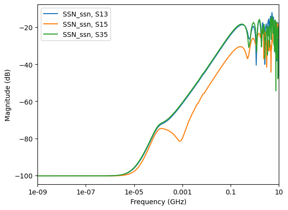

Download this example
Download this example as a Jupyter Notebook or as a Python script.
Touchstone files#
This example shows how to use objects in a Touchstone file without opening AEDT.
To provide the advanced postprocessing features needed for this example, Matplotlib and NumPy must be installed on your machine.
This example runs only on Windows using CPython.
Keywords: Touchstone, report.
Prerequisites#
Perform imports#
[1]:
from ansys.aedt.core.examples.downloads import download_touchstone
from ansys.aedt.core.visualization.advanced.touchstone_parser import \
read_touchstone
Download example data#
[2]:
example_path = download_touchstone()
Read the Touchstone file#
[3]:
data = read_touchstone(example_path)
Demonstrate post-processing#
Plot serial channel metrics#
Get the curve plot by category. The following code shows how to plot lists of the return losses, insertion losses, next, and fext based on a few inputs and port names.
[4]:
data.plot_return_losses()
data.plot_insertion_losses()
data.plot_next_xtalk_losses("U1")
data.plot_fext_xtalk_losses(tx_prefix="U1", rx_prefix="U7")

[4]:
True
Visualize cross-talk#
Identify the worst case cross-talk.
[5]:
worst_rl, global_mean = data.get_worst_curve(
freq_min=1,
freq_max=20,
worst_is_higher=True,
curve_list=data.get_return_loss_index(),
)
worst_il, mean2 = data.get_worst_curve(
freq_min=1,
freq_max=20,
worst_is_higher=False,
curve_list=data.get_insertion_loss_index(),
)
worst_fext, mean3 = data.get_worst_curve(
freq_min=1,
freq_max=20,
worst_is_higher=True,
curve_list=data.get_fext_xtalk_index_from_prefix(tx_prefix="U1", rx_prefix="U7"),
)
worst_next, mean4 = data.get_worst_curve(
freq_min=1,
freq_max=20,
worst_is_higher=True,
curve_list=data.get_next_xtalk_index("U1"),
)
Download this example
Download this example as a Jupyter Notebook or as a Python script.